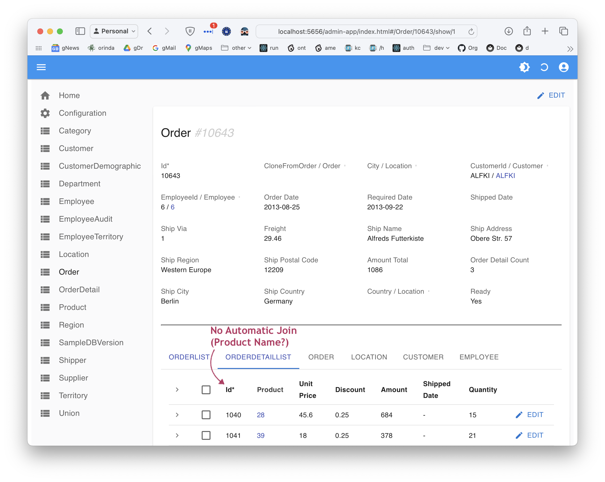

Automatic Admin App
 TL;DR - instant multi-page, multi-table apps
TL;DR - instant multi-page, multi-table apps
| Feature | Provides | Example |
|---|---|---|
| Multi-Page | List/Show pages for each table Built-in search, sort, export |
Customer Page, Order Page, etc |
| Multi-Table | Tab Sheet for related child data Page Transitions for related data |
Customer page has OrderList Click --> Order/OrderDetails |
| Automatic Joins for Parent Data | Product Name - not just the Id | |
| Lookups for foreign keys | Find Product for OrderDetail | |
| Declarative hide/show | Salaried Employee: Hide Union | |
| Customize | Simple - no HTML / JavaScript | Edit ui/admin/admin.yaml |
| Extend | Build Custom UIs with your own framework, using the API | API-enforced logic simplifies app dev |
This page describes the Admin App automatically created during ApiLogicServer create.
Use Cases
The system automatically creates multi-page, multi-table applications as you'll see below. Typical usage is described here.
Back Office Admin
Systems commonly include a number of "back office" admin apps that need to be usable, but do not warrant the time and cost of custom app development. These are costly to build by hand.
Automatic creation of such apps eliminates the time and expense of such back office apps from your project.
Prototyping / Agile Collaboration
It's a common observation that business users relate poorly to technical documentation such as data model diagrams, but instantly related to running pages containing their data.
API Logic Server can create apps instantly, from just the data model. Users are able to run the screens - including updates - and begin the collaboration process, such as: * identify data model issues ("hey, wait, customers have more than 1 address")
- identify rules ("hmm, it needs to verify that balances do not exceed credit limits")
As such items are noted, you can update the data model, recreate, and iterate the design very rapidly, since there is no cost to create the API or the UI.
Complements Custom API-based Apps (Automatic API and Logic Reuse)
That said, it's common that you will need custom apps for complex functions, customer-facing branding, and so forth.
-
Create these in your favorite technology (React, Angular, etc)
-
Base them on the automatically created API, which handles not only data retrieval and update, but also enforces your business logic, which dramatically reduces client app dev effort by factoring out business logic to the shared API.
Architecture - React, based on created logic-enabled API
The Admin App is created in your ApiLogicProject, and operates as follows:
- Applications are declared in yaml files, automatically created from your database
- The applications are Single Page React applications executing in the Browser, acquiring data via the SAFRS JSON:API.
- Updates are submitted to SQLAlchemy; LogicBank listens for
before_flushevents, and enforces the logic declared in yourdeclare_logic.py.
For more information on Architecture, see Architecture.
Key Take-away: instant admin apps, an api for custom apps, with enforcement of declarative logic.
Declare Behavior in admin.yaml
As described in Admin Customization, you can declare your own customized labels, field orders, help text in the admin.yaml file.
Multi-App Projects
Explore the sample project ui/admin directory. You will note it contains several admin files (new for release 6.1). Each file defines a separate admin app:
-
the default app is accessed by
http://localhost:5656/,
corresponding toui/admin/admin.yaml -
custom apps are accessed by
http://localhost:5656/admin/custom_app/,
corresponding toui/admin/custom_app.yaml
See Multiple admin.yaml files.
Tip: Group-specific terminology
You can use these to customize terminology for different user groups within an organization.
For example, custom_app.yaml file might be used by Accounting, with labels such Customer Account instead of Customer, Account Balance instead of Balance, and a re-ordered left-side navigation.
Basics: browsing your data
Let's explore the admin app for the sample database.
Multi-Page, Multi-Table, Automatic Joins
Explore basic data browsing:
- Navigate to
Customer* Depending on your screen size, you may need to hit the "hamburger menu" (top left) to see the left menu * Observe support for Pagination * Observe support for Multi-Field Search - Click the Customer row to drill down to see Customer Details
- Observe the
Placed Order Listtab at the bottom * Observe the multi-table page: a tab is created for each foreign key relationship- You can customize your model if these are absent in your database
- On the Customer page (shown below), click the first Placed Order row * Observe you can navigate through your database, based on the foreign key relationships
- On the Order Page
* Observe the Product information
- This was not stored in the
OrderDetailrow, which contains only theProductId-- which is not interesting to users. - The system provides automatic joins, selecting the most likely "parent" attribute (the attribute called
name, or containingname)- You can tune this (e.g. for different languages) using the
--favoritesargument when creating your project.
- You can tune this (e.g. for different languages) using the
- Click one of the
Product Idvalues - Observe the modal dialog
- This was not stored in the
Key Take-away: instant multi-page / multi-table admin apps, suitable for back office, and instant agile collaboration.
Without Automatic Joins

Search and Sort
Click the left menu to see the Customer list again
- Observe the pagination controls at the bottom right
- Enter a in the
Searchbox - Click the
Contact Titleto observe sorting
Declarative Hide/Show: show_when
You can provide an expression that determines when a field (and its caption) are hidden. For example, you might show the Dues only when the EmployeeType is Hourly, by declaring this in your admin.yaml:
Dues is hidden for non Hourly:
and is visible for Hourly:
It also works on update, such as insert:
Data Types
Your yaml can designate data types. Browse the sample for example, such as Order.Ready:
Images: local or URL
As of release 6.03.06, data fields can refer to images. Explore the Employee page to see images, using the field PhotoPath.
Declaring Image Fields
Edit your ui/admin/admin.yaml to designate images, e.g.:
Locally Stored Images
Images can be stored on the server, by placing them as shown in the diagram below:

URL-based Images
You can also references images by url, such as Steele, specifying a value like:
https://encrypted-tbn0.gstatic.com/images?q=tbn:ANd9GcSWYaD6pHRUklVcWdaY4Jl2HOQCPfxJo8n2zj-ZYBvA8g&s
Application Information
Developers can edit the ui/admin/admin.yaml to provide application help, as shown below.
Users can elect to hide/show this info:
-
Info Toggle - on the personalization control, toggle the info control to display information at the top of each screen. It's initial value is specified by the
ui/admin/admin.yamlproperty:info_toggle_checked: true. -
Info Dialog - click this to show a pop-up dialog for help
Update
Your admin app has important support for making updates.
Lookup
Many databases uses automatically generated primary keys. These can simplify design, but it is unreasonable to expect end users to use these.
For example, Products are identified by an Id. To refer to a parent Product, child OrderDetail rows declare a foreign key from OrderDetail.ProductId.
When adding or altering an order, it's unreasonable to expect end users to enter
ProductIds.Lookup support addresses this issue.
To explore Lookup support:
- On the Customer list
* Click the column header for
Company Name* Remove the search criteria - this should return Alfreds Futterkiste to the top of the list - Click that customer to drill down to the Customer Page
- Click the first Order
- On the Order page, click the pencil icon to enter update mode * You should see the page shown below
- Position to the
Productfield, and begin typing to Lookup a different product * Internally, the system will obtain theProduct.Idand update theOrderDetail.ProductId - Click save
Cascade Add
Cascade Add sets child Foreign Key values to corresponding parent values, such as setting the CustomerId for a new Order. Support is also provided to add multiple rows, such as the Order Details for an Order.
For example:
- Click Customer List
- Click the first Customer (name is "Alfreds Futterkiste", CustomerID
ALFKI) - Click + Add New Order (the bottom of the screen)
- On the ensuing Add, note the defaulted Customer at the bottom of the page
- Lookup Employee (Sales Rep)
- Click Save and Show - you should see this page
- Click Add New Order Detail
- Lookup Product
- Click Save and Add Another
- Lookup { start=10 } Product (choose a different one)
- Click Save
Observe that Logic Enforcement has computed the Order Amount.
Logic Enforcement
Repeat the process above, but note the Customer.Balance before and after. This adjustment occurred not because of typical code in UI controllers or api services, but because of the following rules in logic/declare_logic.py:
# get Product Price (e,g., on insert, or ProductId change)
Rule.copy(derive=models.OrderDetail.UnitPrice,
from_parent=models.Product.UnitPrice)
# compute price * qty
Rule.formula(derive=models.OrderDetail.Amount,
as_expression=lambda row: row.UnitPrice * row.Quantity)
# adjust AmountTotal iff Amount changes
Rule.sum(derive=models.Order.AmountTotal,
as_sum_of=models.OrderDetail.Amount)
# adjust Balance iff AmountTotal or ShippedDate or CustomerID changes
Rule.sum(derive=models.Customer.Balance,
as_sum_of=models.Order.AmountTotal,
where=lambda row: row.ShippedDate is None) # adjusts - *not* a sql select sum...
Rule.constraint(validate=models.Customer,
as_condition=lambda row: row.Balance <= row.CreditLimit,
def units_in_stock(row: models.Product, old_row: models.Product, logic_row: LogicRow):
result = row.UnitsInStock - (row.UnitsShipped - old_row.UnitsShipped)
return result
Rule.sum(derive=models.Product.UnitsShipped, as_sum_of=models.OrderDetail.Quantity,
where="row.ShippedDate is not None")
Rule.formula(derive=models.Product.UnitsInStock, calling=units_in_stock)
- changing an
OrderDetail.ProductId(as we did here) - changing an
OrderDetail.Quantity - adding
OrderDetailrows - deleting
OrderDetailrows - moving an
Orderto a newCustomer - changing
Order.ShippedDate - deleting an
Order
One of the mechanisms to debug logic is the logic log; here is the log from changing the Product, above, illustrating that our change was a multi-table transaction, altering 5 rows:
Logic Phase: ROW LOGIC(session=0x1072b1d30) (sqlalchemy before_flush) - 2021-12-29 20:19:07,564 - logic_logger - INFO
..OrderDetail[1040] {Update - client} Id: 1040, OrderId: 10643, ProductId: [28-->] 1, UnitPrice: [45.6000000000-->] 45.60000000000000142108547152020037174224853515625, Quantity: 15, Discount: 0.25, Amount: 684, ShippedDate: row: 0x1071f2280 session: 0x1072b1d30 - 2021-12-29 20:19:07,564 - logic_logger - INFO
..OrderDetail[1040] {copy_rules for role: Product - UnitPrice} Id: 1040, OrderId: 10643, ProductId: [28-->] 1, UnitPrice: [45.6000000000-->] 18.0000000000, Quantity: 15, Discount: 0.25, Amount: 684, ShippedDate: row: 0x1071f2280 session: 0x1072b1d30 - 2021-12-29 20:19:07,565 - logic_logger - INFO
..OrderDetail[1040] {Formula Amount} Id: 1040, OrderId: 10643, ProductId: [28-->] 1, UnitPrice: [45.6000000000-->] 18.0000000000, Quantity: 15, Discount: 0.25, Amount: [684-->] 270.0000000000, ShippedDate: row: 0x1071f2280 session: 0x1072b1d30 - 2021-12-29 20:19:07,565 - logic_logger - INFO
..OrderDetail[1040] {Prune Formula: ShippedDate [['Order.ShippedDate']]} Id: 1040, OrderId: 10643, ProductId: [28-->] 1, UnitPrice: [45.6000000000-->] 18.0000000000, Quantity: 15, Discount: 0.25, Amount: [684-->] 270.0000000000, ShippedDate: row: 0x1071f2280 session: 0x1072b1d30 - 2021-12-29 20:19:07,565 - logic_logger - INFO
....Product[1] {Update - Adjusting Product: UnitsShipped, UnitsShipped} Id: 1, ProductName: Chai, SupplierId: 1, CategoryId: 1, QuantityPerUnit: 10 boxes x 20 bags, UnitPrice: 18.0000000000, UnitsInStock: 39, UnitsOnOrder: 0, ReorderLevel: 10, Discontinued: 0, UnitsShipped: [0-->] 15 row: 0x1071f2df0 session: 0x1072b1d30 - 2021-12-29 20:19:07,567 - logic_logger - INFO
....Product[1] {Formula UnitsInStock} Id: 1, ProductName: Chai, SupplierId: 1, CategoryId: 1, QuantityPerUnit: 10 boxes x 20 bags, UnitPrice: 18.0000000000, UnitsInStock: [39-->] 24, UnitsOnOrder: 0, ReorderLevel: 10, Discontinued: 0, UnitsShipped: [0-->] 15 row: 0x1071f2df0 session: 0x1072b1d30 - 2021-12-29 20:19:07,567 - logic_logger - INFO
....Product[28] {Update - Adjusting Old Product} Id: 28, ProductName: Rssle Sauerkraut, SupplierId: 12, CategoryId: 7, QuantityPerUnit: 25 - 825 g cans, UnitPrice: 45.6000000000, UnitsInStock: 26, UnitsOnOrder: 0, ReorderLevel: 0, Discontinued: 1, UnitsShipped: [0-->] -15 row: 0x1072bd730 session: 0x1072b1d30 - 2021-12-29 20:19:07,568 - logic_logger - INFO
....Product[28] {Formula UnitsInStock} Id: 28, ProductName: Rssle Sauerkraut, SupplierId: 12, CategoryId: 7, QuantityPerUnit: 25 - 825 g cans, UnitPrice: 45.6000000000, UnitsInStock: [26-->] 41, UnitsOnOrder: 0, ReorderLevel: 0, Discontinued: 1, UnitsShipped: [0-->] -15 row: 0x1072bd730 session: 0x1072b1d30 - 2021-12-29 20:19:07,568 - logic_logger - INFO
....Order[10643] {Update - Adjusting Order: AmountTotal} Id: 10643, CustomerId: ALFKI, EmployeeId: 6, OrderDate: 2013-08-25, RequiredDate: 2013-09-22, ShippedDate: None, ShipVia: 1, Freight: 29.4600000000, ShipName: Alfreds Futterkiste, ShipAddress: Obere Str. 57, ShipCity: Berlin, ShipRegion: Western Europe, ShipPostalCode: 12209, ShipCountry: Germany, AmountTotal: [1086.00-->] 672.0000000000, Country: None, City: None row: 0x1072b1490 session: 0x1072b1d30 - 2021-12-29 20:19:07,569 - logic_logger - INFO
......Customer[ALFKI] {Update - Adjusting Customer: Balance} Id: ALFKI, CompanyName: Alfreds Futterkiste, ContactName: Maria Anders, ContactTitle: Sales Representative, Address: Obere Str. 57, City: Berlin, Region: Western Europe, PostalCode: 12209, Country: Germany, Phone: 030-0074321, Fax: 030-0076545, Balance: [2102.0000000000-->] 1688.0000000000, CreditLimit: 2200.0000000000, OrderCount: 15, UnpaidOrderCount: 10 row: 0x107210670 session: 0x1072b1d30 - 2021-12-29 20:19:07,570 - logic_logger - INFO
Logic Phase: COMMIT(session=0x1072b1d30) - 2021-12-29 20:19:07,572 - logic_logger - INFO
....Order[10643] {Commit Event} Id: 10643, CustomerId: ALFKI, EmployeeId: 6, OrderDate: 2013-08-25, RequiredDate: 2013-09-22, ShippedDate: None, ShipVia: 1, Freight: 29.4600000000, ShipName: Alfreds Futterkiste, ShipAddress: Obere Str. 57, ShipCity: Berlin, ShipRegion: Western Europe, ShipPostalCode: 12209, ShipCountry: Germany, AmountTotal: [1086.00-->] 672.0000000000, Country: None, City: None row: 0x1072b1490 session: 0x1072b1d30 - 2021-12-29 20:19:07,572 - logic_logger - INFO
Note: your log is truncated to make it easy to view on a console, as explained in the link above.